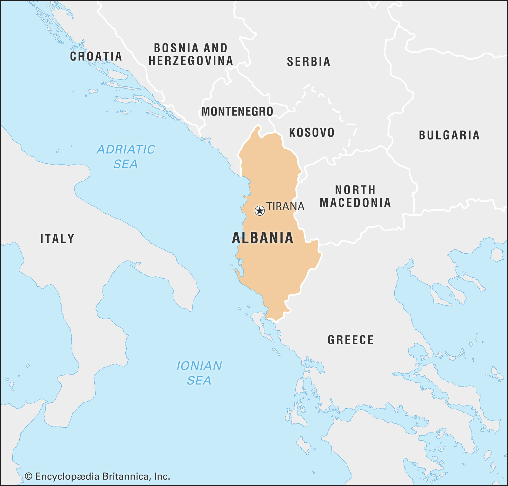
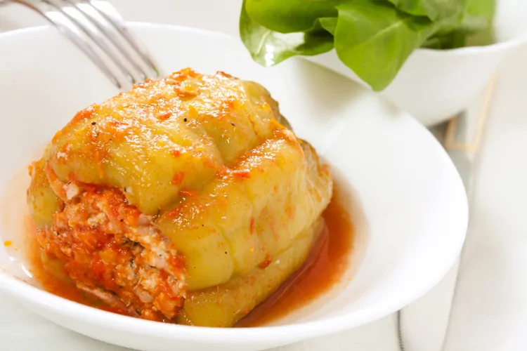
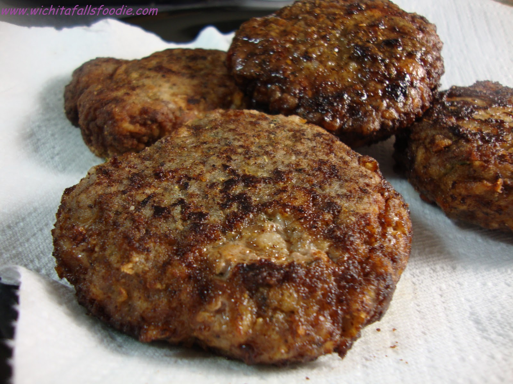
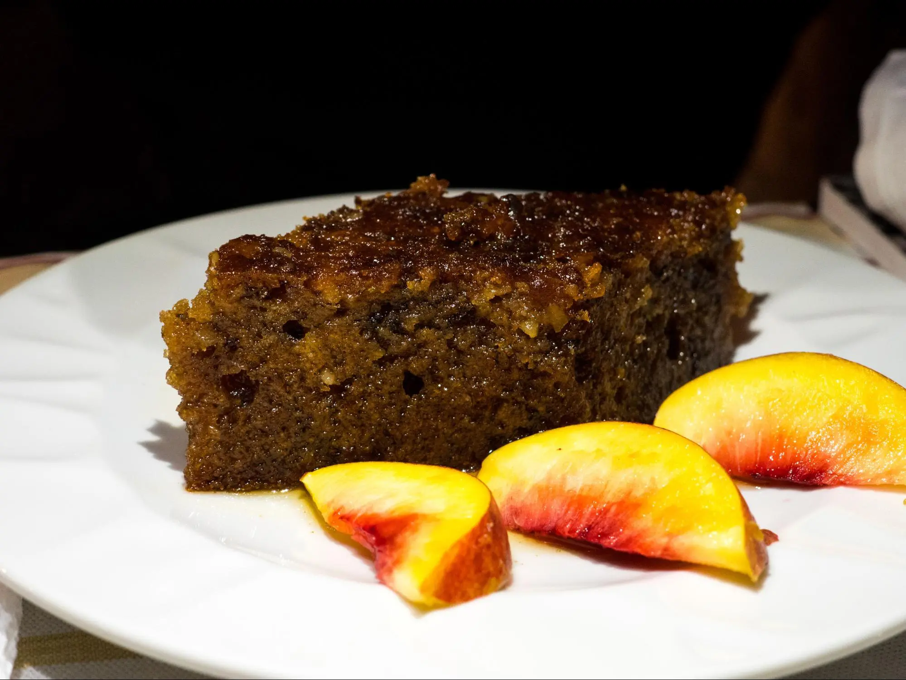

The national dish of Albania is something that you definitely shouldn’t miss while you travel to Albania. Tavë Kosi is a lamb dish with rice that is baked with a mixture of yogurt and eggs. It can also be made with chicken, but then it’s called tavë kosi me mish pule.
Few Reasons to Visit Albania Right Now!
1. Albanians are SO friendly
Albanians LOVE foreigners, and nothing makes an Albanian happier than welcoming somebody into their country. When I was in Albania, people were always desperate to talk to me. They would come up to me at markets advising me about prices, they would give me their seat on the bus, they would carry my bags and just generally go out of their way to make sure I was happy and comfortable in their country. An old Albanian adage says that ‘An Albanian’s house is the dwelling of God and the guest,’ and for this reason Albanians will not rest until you are fed, watered and comfortable. What’s more, because Albania was closed to foreigners for so long. Albanians are delighted to see people exploring their country, and they often can’t believe that people have travelled all the way from Australia (for example) to see Albania. In 4 years of full time travel, I have never encountered people as warm and welcoming as the people in Albania.
2. Albania has the best beaches in Europe
Sorry Spain and Croatia – when it comes to beaches, Albania has it covered, and if that isn’t one of the best reasons to visit Albania then I don’t know what is! With almost 300 miles of stunning coastline and white sand beaches, Albania is the best place in Europe if you’re a beach bum, and because Albania is still relatively undiscovered, you won’t struggle to find a place to sunbathe. Not only is accommodation on the Albanian Riviera very cheap, but there are also lots of ‘secret’ beaches that you can camp out on – beaches that you’ll only find if you hire a car and do your own road trip down the coast.
3. The mountains are equally as beautiful
If you’re more of a mountain person, then fear not because you will not be disappointed in Albania. For fans of hiking then there are also ample hiking trails in Albania, the most popular among backpackers being the Theth to Valbona hike, open seasonally. Fun fact for Harry Potter nerds – Voldemort actually hid out in the Albanian mountains so it’s super cool to go here as a HP fan and picture He Who Must Not Be Named enjoying the Albanian nature!
4. The Blue Eye
Albania’s famous Blue Eye (Syri i Kalter) is a water spring and natural phenomenon that you can’t miss if you visit Albania. More than 50-metres deep (nobody actually knows how deep the Blue Eye is because divers haven’t been able to reach the bottom), the water in the Blue Eye is so clear that you can see right to the bottom! Surrounded by oak and sycamore trees and a turquoise river, the Blue Eye is an enchanting place. Just be careful if you decide to go for a swim – the water is freezing!
A BRIEF HISTORY OF ALBANIA
Ancient Albania

The people of Albania learned to use bronze about 2,100 BC. Then about 1,000 BC they learned to use iron. The iron age people of Albania are called the Illyrians. The Illyrians eventually came into conflict with Rome and the Romans conquered them in 167 BC.
Under Roman rule Albania prospered. The Romans built roads in the area and towns like Elbasani grew up. However in 395 the Roman Empire split into two parts, East and West. Albania became part of the Eastern Empire, which is known to us as the Byzantine Empire. During the 4th, 5th and 6th centuries Germanic peoples invaded Albania several times but they always withdrew. Between the invasions life went on as normal. Yet because of its position on the edge of the Byzantine Empire Albania was weakly defended. In the 10th century the Bulgarians conquered large parts of Albania. However the Byzantines recovered their territory in the early 11th century when they were led by emperor Basil II.
Albania in the 20th century
The nationalist movement promoted Albanian language and culture. Then in 1912 war broke out between the Turks and the Balkan League (Montenegro, Greece, Serbia and Bulgaria). By 1912 the Turkish Empire was in steep decline and Albanians were afraid their country would be divided up between members of the Balkan League. To prevent that happening Albanian leaders met in Vlora and on 28 November 1912 they declared independence. On 20 December 1912 the European great powers (Britain, France, Germany, Austria and Russia recognised Albanian independence. In 1913 they appointed a commission to demarcate Albania's borders. However, they refused to recognize the provisional government in Albania. Instead, they made a German prince, William of Wied king of Albania. William arrived in Albania in March 1914. However, he fled after only six months in September 1914. Albania then split into regions without any central government. However in 1918 the Albanians formed a provisional government. Elections were held and a parliament sat in Tirana in 1920. The Albanian Interior Minister was Ahmet Zogu (1895-1961). In December 1922 he became Albanian premier. However, Zogu lost the election in January 1924 and he fled abroad in June 1924. Yet in December 1924 with Yugoslav help, he marched on Tirana and overthrew the government. Zogu quickly made himself dictator. In 1928 he made himself King Zog of Albania.
Albania in the 21st Century
Gradually stability returned to Albania. However since 1998 the Albanian economy has grown although Albania remains a poor country. Today the government is trying to improve infrastructure in Albania. Meanwhile in 2009 Albania joined NATO. Today Albania is hoping to join the EU. Today the population of Albania is 2.9 million.
Albanian clothing
Traditional Albanian clothing (Albanian: veshjet tradicionale shqiptare, veshjet kombëtare, veshjet popullore or kostumet kombëtare) includes more than 200 different kind of clothings in all Albania and Albanian inhabited lands. This is due to the division the Albanian principalities in the Middle Ages. Almost every region in Albania has its own traditional dress with women clothing being particularly colorful and rich in detail. Fabrics are traditionally made by weaving clothes using looms. To this day, some conservative old men and women mainly from the North wear traditional clothing in their daily lives. Instead, older women from the South usually wear all-black outfits.
Albanian Cuisine
Speca me gjize
Stuffed peppers with cottage cheese is another classic that you can find in many restaurants. It can also come in other variants such as stuffed peppers with meat, rice, and vegetables.
Qofte
Albanian version of meatballs usually made from lamb mince. Qofte does come in different versions and is traditionally served as lunch or dinner together with salad, bread or rice.
Shendetlie
The shendetlie is a delicious traditional cake made of walnuts and honey, soaked in a sugar syrup. It is considered a cousin of the ravani, which doesn’t contain any walnuts or syrup, but is made in a similar way.